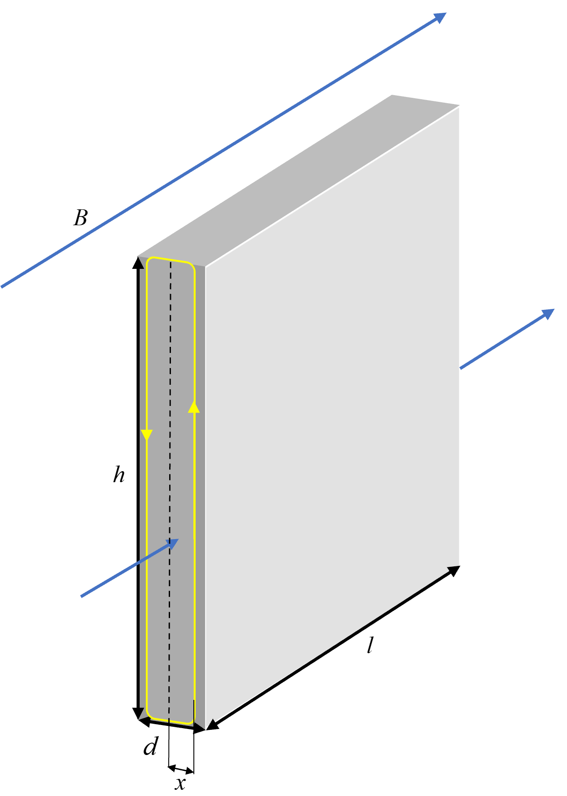

最近在看梅晓榕老师的自动控制元件与线路(第五版),看到涡流损耗那里拼尽全力未能推出,四处检索未发现有人明确提及这个问题(或许是太简单了,又或者是我没看到).
花了不少时间后发现其实是磁场方向出了错误.为方便后来者遂写此篇.
对一个由厚度为 d 的带绝缘薄膜的薄钢片叠压而成的铁芯,取一片将其置于交变磁场B=Bmsin(ωt)中进行研究,则其由于涡流发热产生的损耗是多少?已知其质地均匀,电阻率为ρ,体积为V,h≫d,l≫d.(注意此处不能将h,l视为已知量).假设磁导率为常数,不考虑其他损耗.

取如上图所示的黄色回路,容易有：
Φ=BS=Bmsin(ωt)⋅2hx
这条回路的电阻R为:
dR=ρl⋅dx2(h+2x),由h≫d≥2x,略去分子上的2x,可得:
dR=ρl⋅dx2h
这条回路上的电动势ε为:
ε=−dtdΦ=−2hxωBmcos(ωt)
整块铁芯的功率P:
P=∫02d∫0TdRε2dt.
内层积分是十分简单的.不愿亲自计算这个积分也可以使用有效值的知识来解决.
总之,联立、化简有:
P=ρhlBm2ω2∫02dx2dx=24ρhld3Bm2ω2=6ρπ2f2Bm2d2V
此处需要提醒:V=h⋅l⋅d,ω=2πf
可以看到这个结果与梅老师书上给出的结果一致.